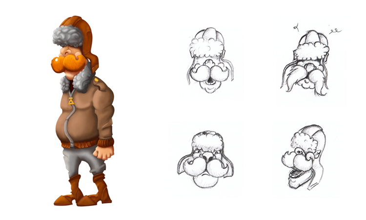

Henry
Histoire
Sa principale caractéristique serait qu’il dispose d’une moustache plutôt imposante, mais ne vous y trompez pas son imagination l’est d’autant plus.
Contrefacteur de son vivant, c’est suite à une dernière fraude auprès d’une célèbre compagnie d’aéronef qu’il s’est retrouvé à errer, coincé sur les rives du Styx. Ne pouvant pas prendre en charge les frais de son passage en Outre-Monde, il déambule avec le but secret de trouver le moyen d’effectuer la traversée du Styx en outrepassant la surveillance du Passeur.
Concept
Née le 5 mars 2015 après deux mois de conception, Henry est le premier personnage à avoir vu le jour. Ayant le rôle principal, il devait pouvoir à lui seul représenter correctement l'univers de Styx.
Bedonnant, moustachu et une tenue d'aviateur, c'est en imaginant la caricature de ce à quoi pourrait ressembler un pilote russe de 1910 que les premiers traits d'Henry se sont formés. Malgré le lieu de l'histoire (la mort quoi) je voulais que le personnage garde bonne mine et reste souriant.
Message d'Henry :
Et parmis toutes les couleurs de moustache disponnibles, il a choisi le roux...